来源：https://giwb0zv0cv.feishu.cn/docx/IpCcdJ9NAoAt4pxKKV5c5sfenZc
小红书资料号详细拆解，新手友好，简单可复制
本文致力于让和我一样的小白，能尽快理解小红书运营的逻辑和资料号的基本操作流程。
没有复杂的工具，没有高难度操作，只有朴实无华的有效动作！
方便新手理解，讲了几个故事，可能有些文字“不太正经”，但文章绝对是正经干货文！
1 周内涨粉 6000+，截止12月初变现 3w+，加微信 2000+（英语类目 变现对接星城老师的资源）
做出 7、8 篇评论 500+、20 多篇评论100+、以及更多点赞过万，评论20~30的笔记
账号数据
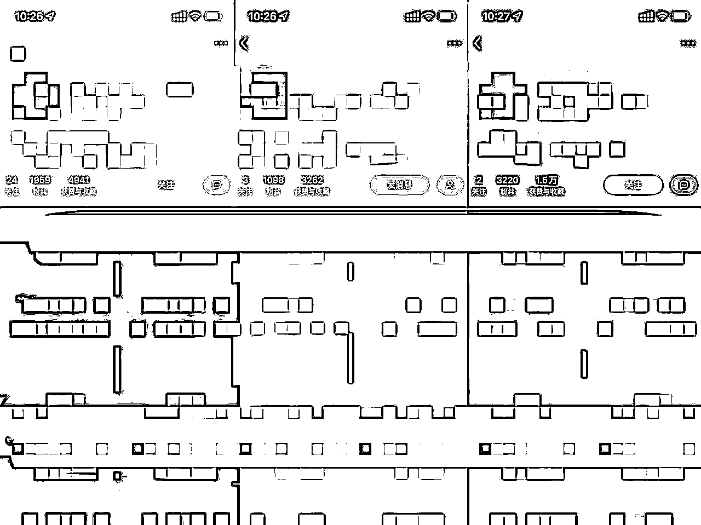
后台数据（主要关注赞评比）
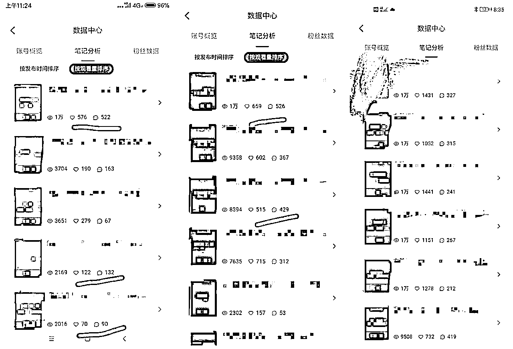
评论区
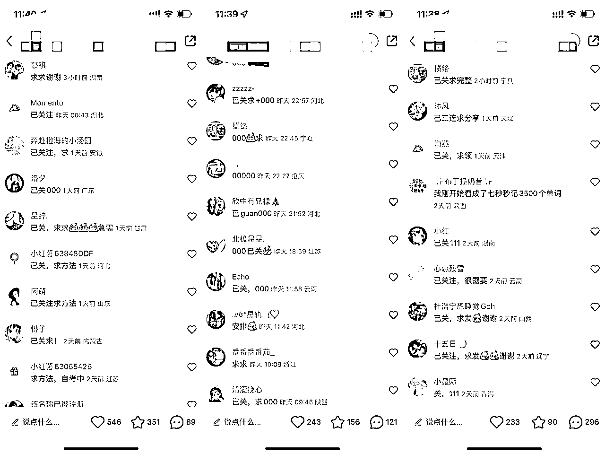
资料号重点：
命运的转机，是我报名了11月航海的小红书运营志愿者。
在这期间，我学习了航海手册 ，听了每位教练的分享，随后惊喜发现我遇到了对的平台。紧接着链接上了星城、无敌和梨云三位教练，感觉又遇到了对的人。
参与航海，有人教、还有圈子交流，再加上有 300+ 志愿者伙伴们的陪伴，我对下场实战就没那么恐惧了，于是我开始了实操，下面开始展开~~~
简单介绍下自己，91 年腊肉，经历呢比较曲折。大学期间做过情感培训正值风口赚了 50w+ ，后来同学带我参加了 1040 阳光工程又血赔一波
毕业之后做了金融，和咱们圈友晋四喜一样做贷款，18 年之前政策宽松，2 年时间赚了点钱，买了 2 套房还生了娃。
接着开始了瞎折腾，搞外汇 炒币 P2P……折腾了一年多，房子搞没了，还欠了近200w😢
受打击以后就在家，一边emo，一边看书，一边互联网找项目。起初一个人没方向，像无头苍蝇一样乱撞，前两年抖音比较火，我是没少付费啊，大蓝、参哥、薛辉，能买的课大部分都买过。
基本就是学习听课，自我感动，自我麻醉，不敢实操，失败恐惧，过不了自己的心魔，感觉空虚了就再付个费，再听听课（有圈友和一样的，来留个言，哈哈）
后来加到了链接到了钱南的圈子，开始经常和大家聊天，渐渐开阔了视野，在钱南的推荐下加入了生财有术（感谢推荐人钱南 ）
从开始，入圈第1年，一直潜水，几乎没有打开过知识星球 App，认识的圈友也不超过 5 个（皮一下，有没有和我一样的圈友哇）。
到现在，我连续多次参加航海，每天必刷精华帖，手机电脑壁纸都是生财实战壁纸，微信通讯录80%都是圈友。
为什么有这样的变化呢？缘起，是去年报名了精华共读志愿者（当时并不知这是命运的转折点），第一次做志愿者收获很大，接着就有了第2、3次的志愿者经历……
在做志愿者的期间——
认识了：100多位可爱的船员，并且进行了深入的沟通，有位船员在深圳和我分享了口罩期间，深圳如何人性化管理还说要带我吃深圳的美食、有位船员是龙珠圈友擅长写作，给我开了小灶、还有一位搞技术的船员，帮我解决了一个大大的难题……
链接到：热情的志愿者们，他们给我提供了莫大的帮助，到现在志愿者群都是我最宝贵的财富，给我1w都不换的那种。
几次业务中遇到了卡点，群里问一下，不出3分钟我就获得了5种以上解决方案，甚至有主动加我，还给我语音指导了1个多小时，简直感动到哭。
我想说：在生财有术，志愿者们就是最可爱的人。
发个图大家感受下：
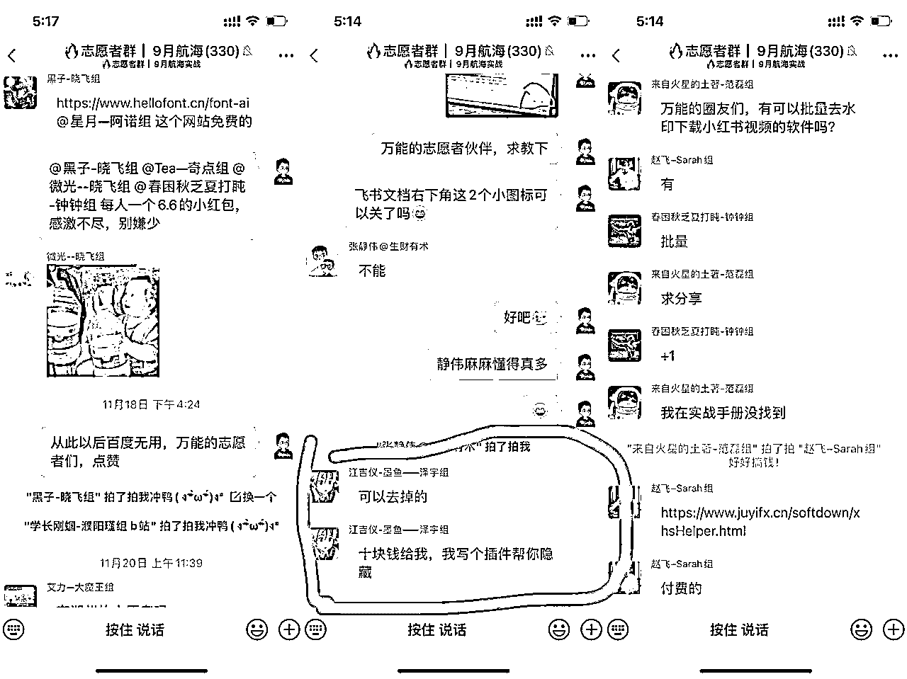
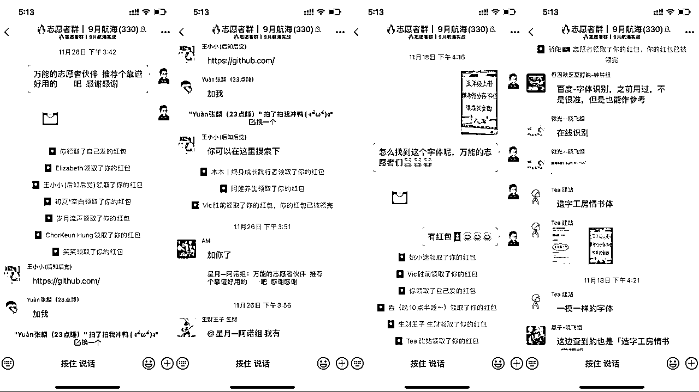
树立了：自己做副业的基本原则，这几点都是在航海实战中学到的，备忘录置顶，每天一遍。
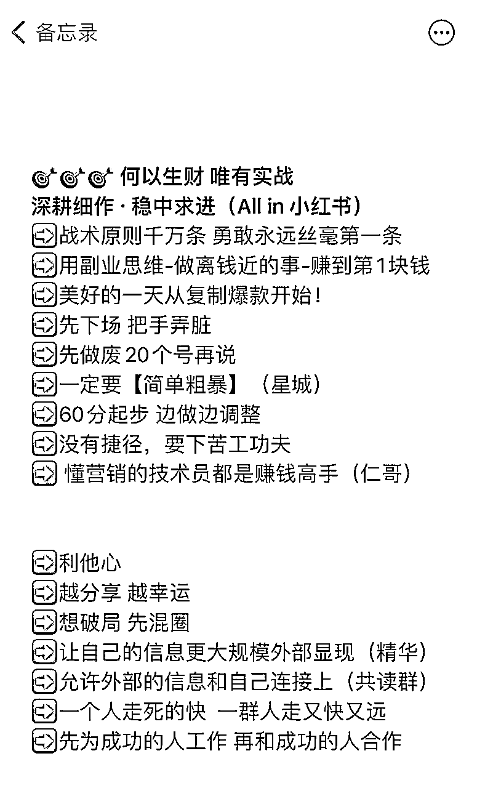
疯狂安利：
如果有圈友现在还没方向或加入生财有一段时间，还在外围游走的话，建议先参加2、3次志愿者。
在甲板上你会遇到同频的伙伴、流量高手、技术大牛、各行精英，这些优秀的高手，统统可以连接到。
（我在无意中通过参加志愿者,打破了自我封闭，希望你也可以）
链接的重要性，老大这样说:
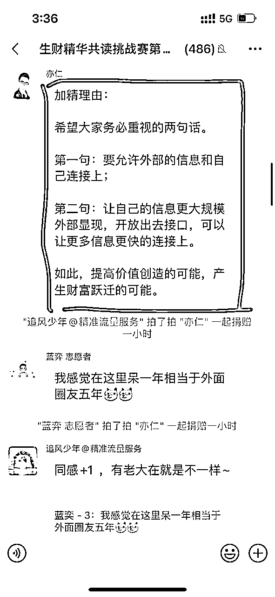
啰嗦了很多，下面开始实操环节～～～
老大说过：牛逼的人一辈子只做一件事，厉害的人一年做一件，普通人就厉害了一天能做好几件
一开始我想要做所有平台的流量 项目也是见一个爱一个，每天定计划都是假大空。
放个图，圈友轻点喷，我看到别人赚钱的项目，就记录下来，但，一个都没操作（有没有一样的圈友？）
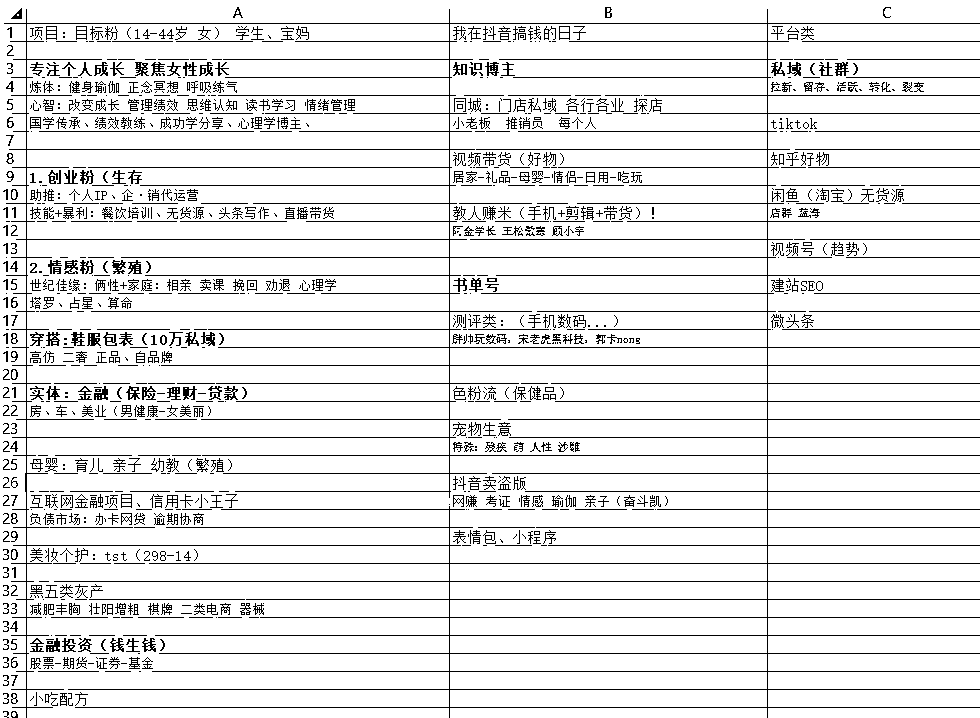
连最开始参加航海，我都是一起报4条船，还觉得不够，生财团队给我退款，我还挺生气的，哈哈哈。
这个状态大概保持了一年,不但没有赚到钱，反而比以前更穷了，回头看之前的想法，真是傻的有点可爱。
估计有很多伙伴也是这样吧，这个坑我呆了一年，希望你能早点走出来：回头是岸、深耕细作才是出路。
现在我只想做好小红书，做好资料号这就够了（多么痛的领悟，你是我的全部）
要从用户的视角去看问题，徐东 星城 梨云等众大佬帖子中都反复提到过
用户到底喜欢什么呢，这是个值得思考的问题
分享几个我老婆最近在抖音下单买的东西：
从我老婆身上我学到不少用户思维，原本以为保健品只有老年人才会相信，其实不然我们每个人都具备“老年人属性”，以前我总会和我老婆讲道理摆事实，告诉她要跑步锻炼动起来才行。
现在我不了，我俩经常一起刷抖音，遇到便宜的又“感觉”效果好的神器，我有时候会主动让她买来试试，她表示很感动，从此夫妻关系融洽不少，做的饭都比以前香了！
重点：用户要的是感觉，是心动的感觉！！！感觉到了没什么不可以。
用户心动公式：
购买欲=自己少费力（最省力法则）+神器/方法/秘籍（帮助）+马上现实愿望（及时享受）
一句经典广告语道尽其中奥秘：“吃了盖中盖，一口气上五楼不费劲儿”
如图：搜学习法，一个「综合」，一个「最热」，排在最前面的有摆烂学习法和懒人学习法，下面还有睡觉学习法，相比姜文要站着把钱赚了，用户更愿意躺着就成学霸，一“觉”封神！
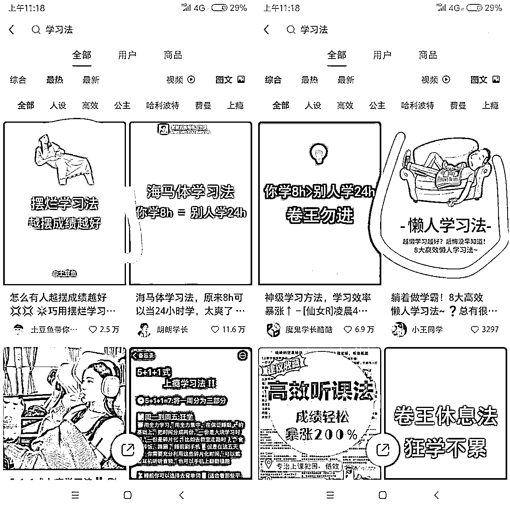
宗旨：让用户心动，心动就会行动，行动产生成交，我们方能赚到副业路上第一块钱
没有用户思维怎么办？
方法：每天半小时，想象自己是用户刷同行、看评论，一周后惊喜和变化看得见！
好啦，最重要的第一步：用户思维我们已经有了，下面开始选赛道~~~
两个月之前我连蓝海和红海的概念都搞不明白，为此查看了几天知乎和精华帖。
所以我觉得直接说选赛道是耍流氓的行为，因此有了下面的故事（新手解读版）
这是悲伤的故事：
当年我以430的高分上了哈尔滨的黑龙江财经学院「计算机系」
报考理由：
a.听闻哈尔滨美女多
b.财经院校女生多
这妥妥的大蓝海中的蓝海。
拿到通知书时特意查了一下：学校的男女比例2:8 可把我高兴坏了，失眠好几天（当时大意了 忽略了我的院系）
直到上课我懵了，200人的大教室 只有4个女生 其中1个是我们班的，女孩叫小鱼 南方人 相貌一般。
以后的故事就是：我（无奈）守身如玉3年（当时还不懂得和外部链接）
这个小鱼被我班同学和老师视为掌上明珠，成了班级书记还拿下了连续3年的奖学金...
好了 故事讲完了 开始套娃
比如故事中悲惨男猪，一个小白在充满竞争者且同行挺有实力（东北的兄弟比较高大帅气）的赛道想熬出头比走蜀道还难。血的教训： 选择大于努力，选择不对 努力白费！
比如小鱼同学，自身实力一般 却找到1个男生多（用户多） ，女生少（同行少）的班级（细分赛道）那一定机会多多，“这就是蓝海”
有些是大赛道看起来蓝海 部分细分领域已经打破头了（案例：悲惨的猪脚）
有些是大赛道看起来红海 部分细分领域还是很空白（案例：小鱼儿）
举例：
做抖音很卷，但依然很多小类目很香：小程序 小说变现 时不时还有新的蓝海赛道出现
做小红书人少，但最近资料号又貌似有点卷，再细分下去各年级 各科目还是香饽饽
本质：供不应求还是供大于求
三厨狂喜：自己喜欢 用户喜欢 平台喜欢
就像毛爷爷说的前途是光明的 道路是曲折的、摸索期我们需要一个坚持下去的理由，我想做自己热爱的事情是最好的内驱了
小技巧：干货内容和营销内容结合起来 28开，10篇内容 8篇营销 2篇干货
直接好处：干货笔记更容易吸粉 可以引爆流量 从而带动其他引流的笔记（下图）
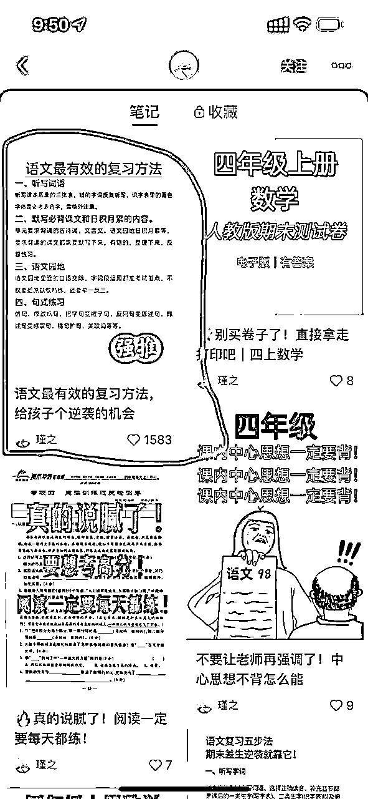
1.首页搜关键词 二级类目 下拉词
这个方法主要用来参考赛道是否符合平台的调性，还有大概生态环境如何（如图）
很多大佬都分享过 非常实用，这里就不赘述、下面说的自己的新发现
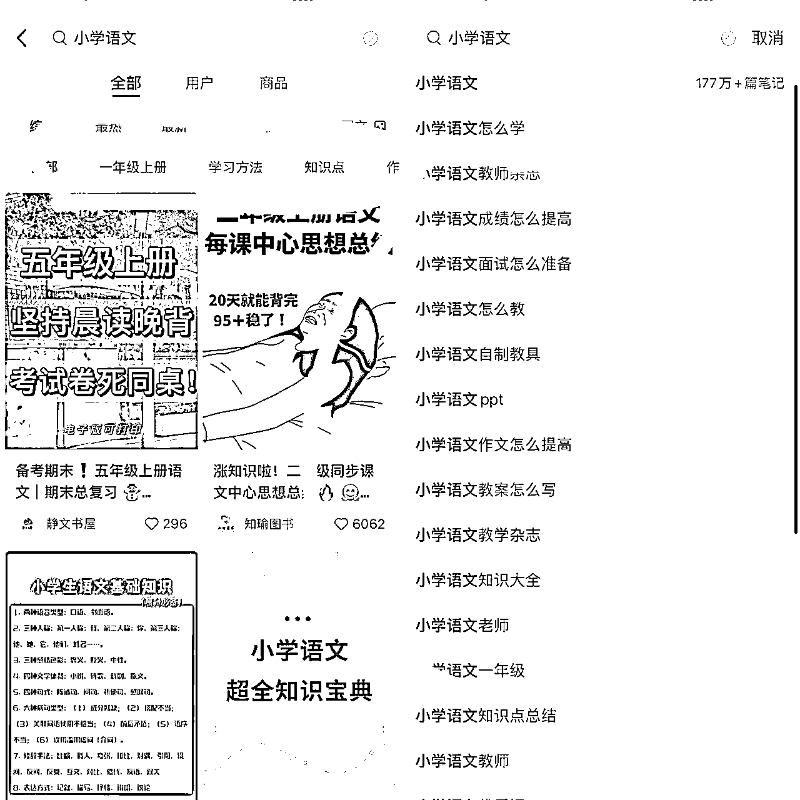
2.找头部
看自己要做的赛道有没有大的头部 头部效应垄断会吸走不少流量
搜小学语文，前面4个都是河南的ip 风格相似 且是认证号，继续往下翻，会发现有几十上百个账号，这个说明已经有大佬/专业选手入场，新手去啃就会比较吃力。
但是呢，他没有做细分，我们切入做一年级，二年级，三年级的话机会就更多一些
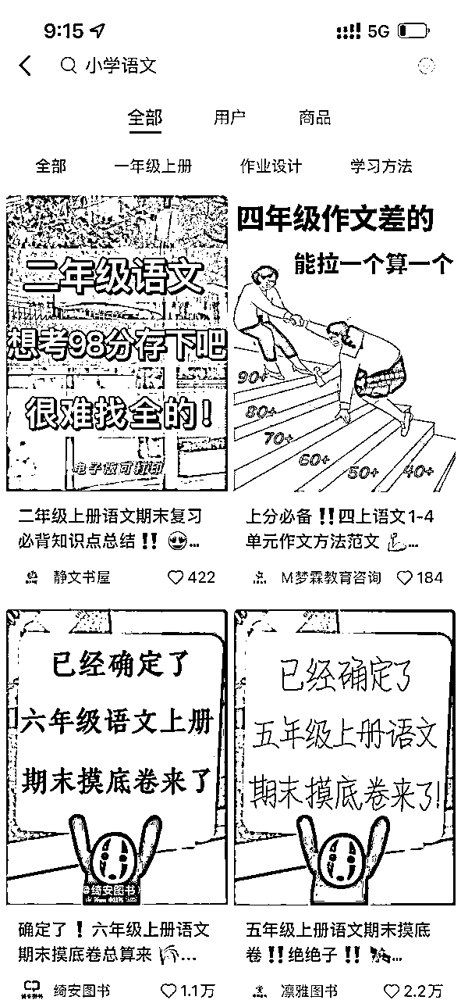
PS：小学类目没发现数学和英语有类似大佬入场，初中各科目也比较空白，说明目前资料号在各学科类目下几乎都是蓝海 等着我们去开拓
3.查最新和最热
搜小学语文和小学英语最新笔记你会发现：语文类目24小时内笔记数量远远大于英语笔记，在5-10倍
但2个赛道用户画像是一样的。
举例：24小时内语文笔记发布100篇，英语笔记发布10篇,意味着发一篇语文的竞争者有100个，发英语类目笔记只需要跑赢10个人。
我现在做的是英语类目 很香，前期用这个方法做过调研（下一步也准备尝试下语文）
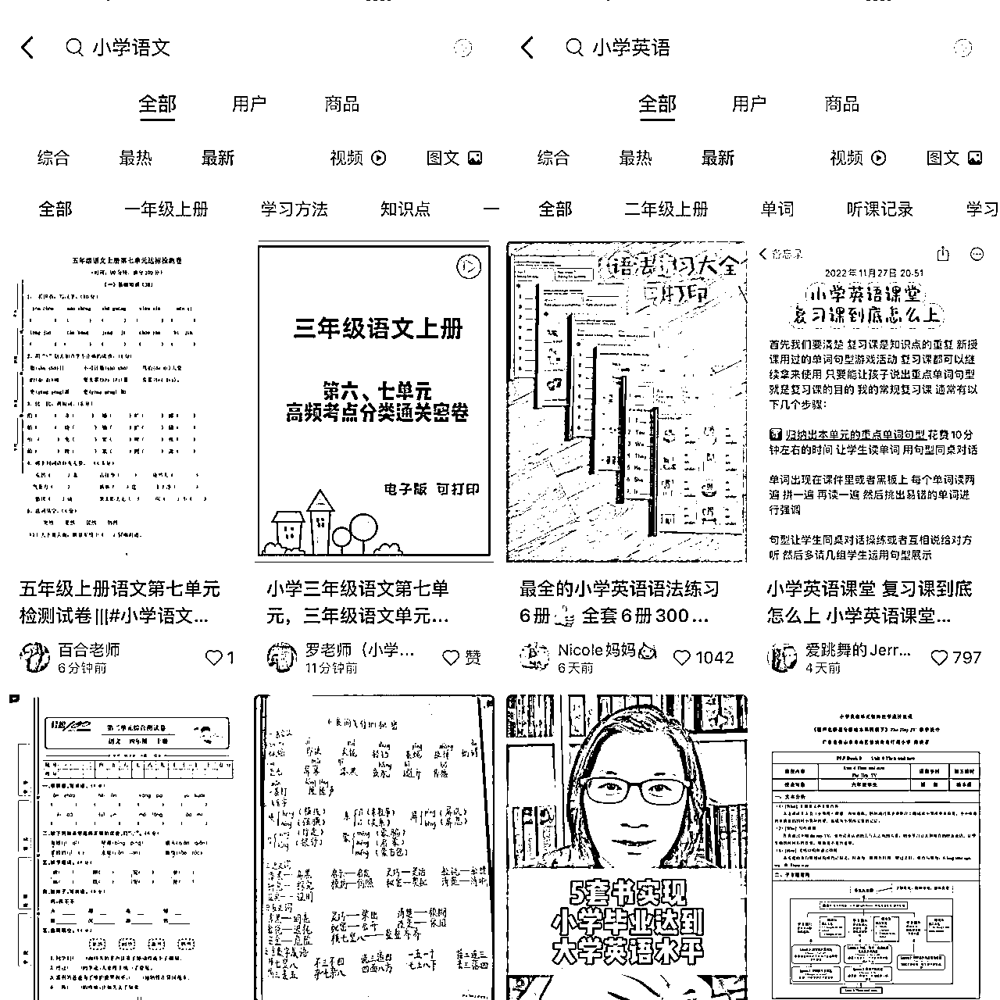
下图是小学语文和小学英语最热，点赞基本在一个量级，侧面反映了这俩类目的用户数量和喜好程度是差不多的，唯一的区别就是英语类目竞争更小 更好做。
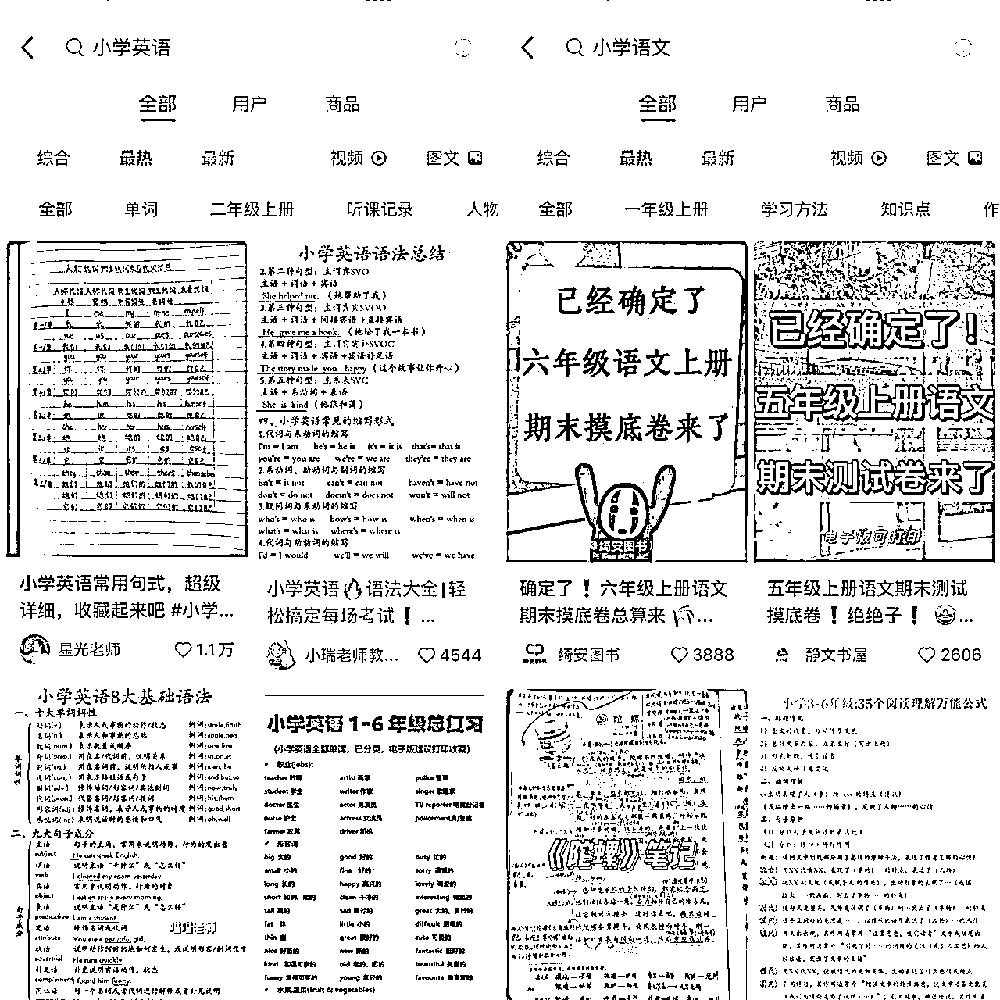
4.多刷星球
入了生财 基本不存在信息差，多刷多看 总有不期而遇的精彩，最新行业动态和新鲜玩法尽在其中
我现在做的类目是英语 方向是考研，歪打正着了老大发的这个表，简直绝了！
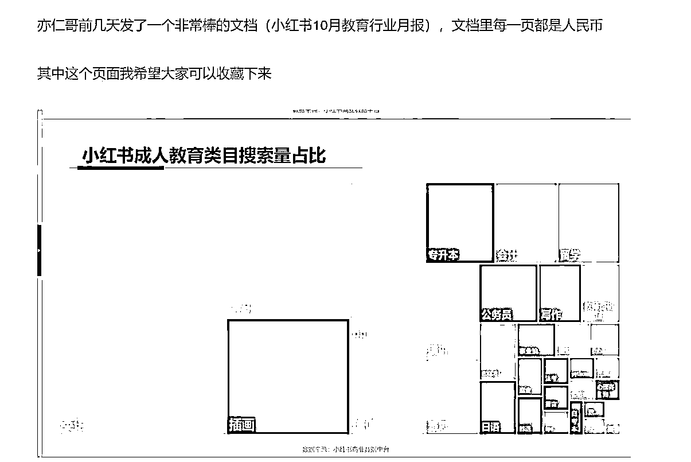
上面四种方法结合起来使用 你可以清晰感知到在小红书这个平台，自己定位的赛道：
当下市场如何 同行数量多少 有没有大佬入场，用户喜好程度 行业动态也清晰了
基本上基于赛道对用户-同行-平台做了三位一体大扫描，到这里我们功课就做的很到位了，感觉吃力就换定位，感觉没问题就开始冲。
下一步 咱们开始拿捏选题
新手上路的伙伴如果你看完这一段 还不懂什么是选题的话，我的姓倒着写（我姓田～）
话说你有一家足疗店，名字叫：大漂亮足疗按摩
做推广的话你有下面几个方向（这7点都是选题方向）：
1.美女多多 2.价格实惠 3.装修高档 4.技师专业 5.私密性高 6.年轻漂亮 7.停车方便
好的营销：从7点中挑出用户最关心 需求最高的1-2点去说（不求面面俱到 但求直击要害）
比如上面案例我最关心的依次是：4 2 7 （做按摩，技师手法当然是最重要的了😜）
你发的营销方向如果是1或6，那我肯定看都不看的呀，内容再好 也没用，因为这个根本不是我的需求。
方向不对 努力白费、七分选题 三分内容就是这么来的，懂了啵 我的宝
圈友，告诉我你最在意的需求是哪个呢😍
一句话总结：
选题就是在基于你的产品可以为用户提供的价值中找出用户最关心的那几个点
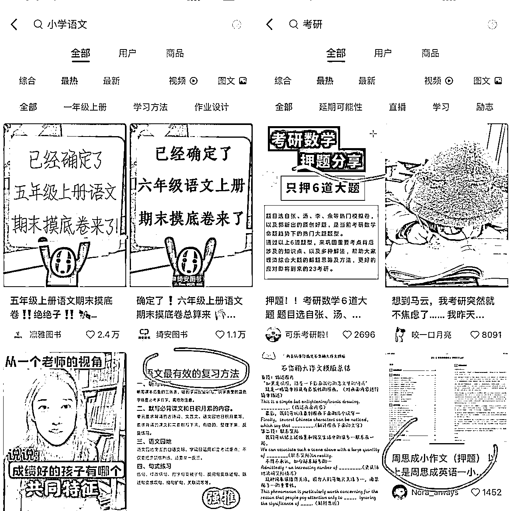
以上几个思路均是以市场反馈为中心 以用户需求为核心，为了避免自嗨 我用的方法就是“不自己感觉”
一切以市场为导向，看用户怎么说
选题搞定以后什么最重要呢，当然是封面了 人靠衣装马靠鞍
这是我在b站关注的一个换头博主（美妆博主）
你的封面如果是图左的话用户应该会躲着走，图右的话点击率是差不了的
不过审美能力是个慢慢提升的过程，我是直男 还是先乖乖复制爆款吧😂
方法1 保持开放 多链接 方便了解最新行业动态
我的三个账号：一个梨云绿 一个梨云黑 期待梨云教练出更多模板
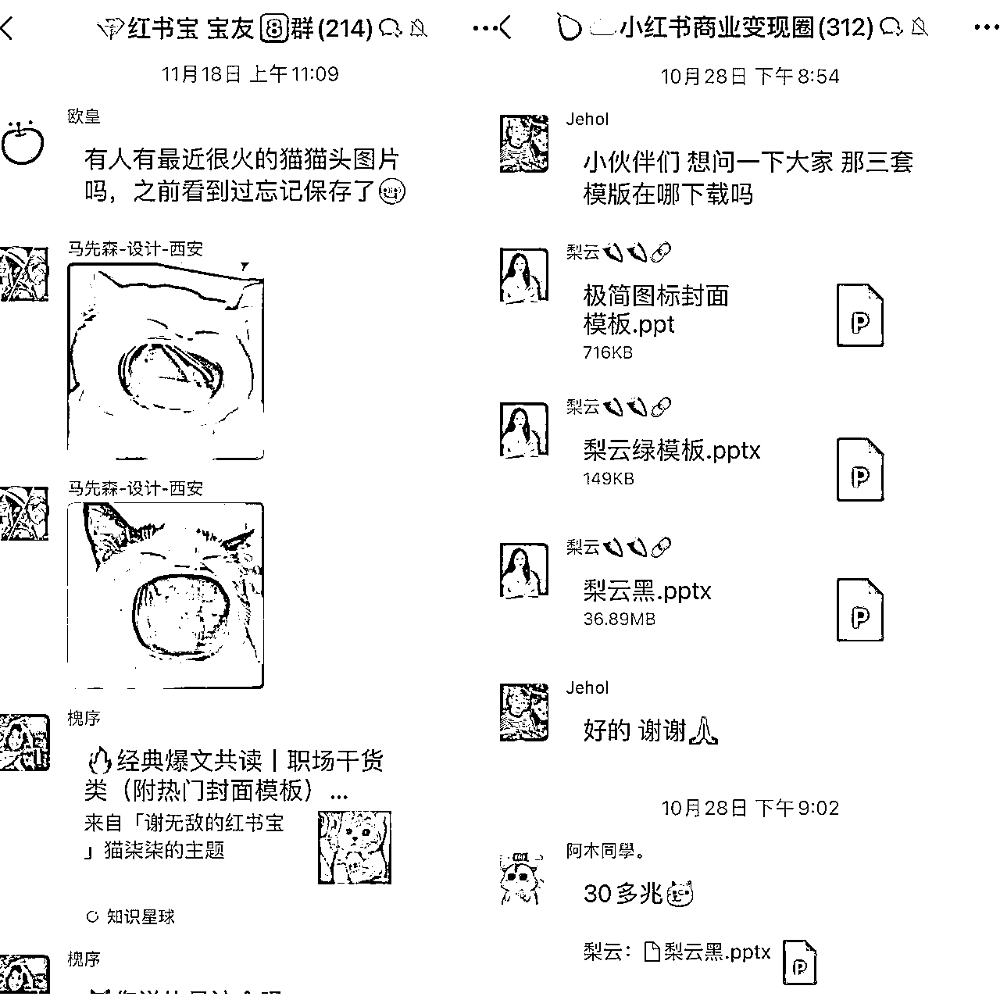
这里必须要说的是：生财的航海教练团队真的很好很强大 YYDS
跟星城教练学了运营知识 跟无敌教练学了爆文技巧 白嫖了梨云教练的模板
一定要多参加集体活动哦😘
方法2 自己动手 丰衣足食
以学习类为例：搜学习 成长 干货 考研 小学 职场 学霸 知识...刷1个小时 后退回首页
（小红薯推荐机制比较及时 容易刷垂，这时推荐页基本都是学习类 其中找到爆款封面）
参考方向：一个月内、低粉高赞、千赞以上、多次出现、近7天数据稳定
找到以后：用下图小程序去水印 再用美图秀秀消除笔功能去文字，就是自己的模板了（拿来主义😜）
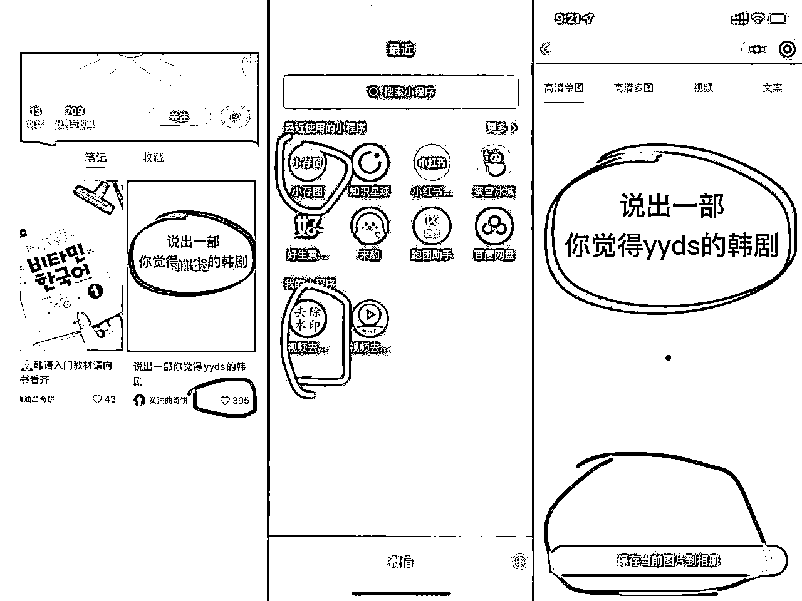
如果模板是纯色系的话，直接用创客贴吸一下颜色即可（小红书首图比例1242:1660）
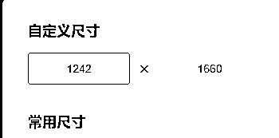
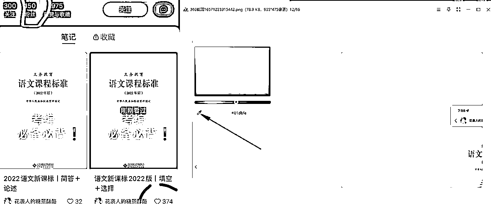
搞定了模板，下一步标题 冲冲冲！！！
基本原理：
标题公式
正面刺激：产品或方法+只需1秒（短期）+便可开挂（逆天效果）
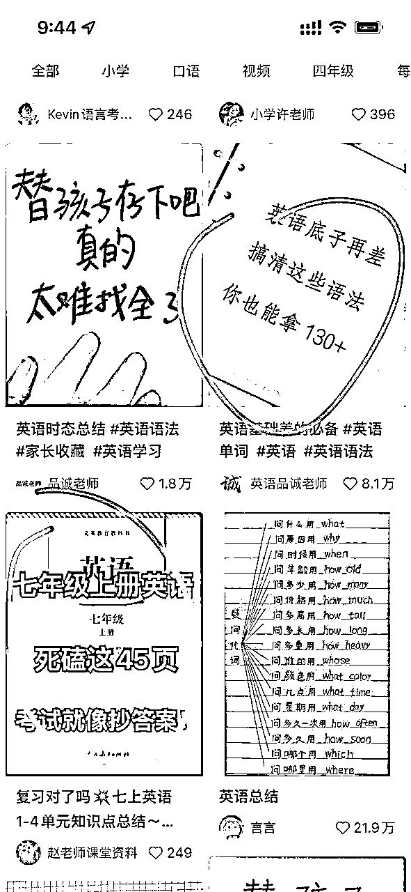
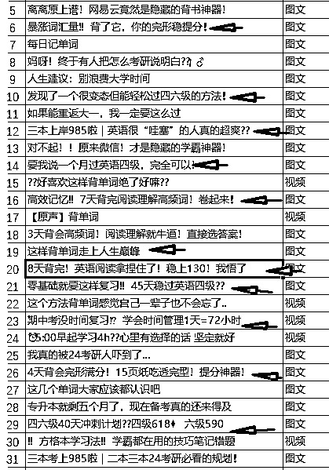
负面刺激：你不xxx+绝对会后悔（天大损失）+（紧迫感）
其实就是利用人们厌恶损失和负面偏误的心理（毕竟在原始社会得到一个机会可能只是多吃几口肉 但是一个失误可能葬身虎口 自然进化让我们在面对负面消息时 更加敏感）
说到这里要感谢下袁隆平爷爷，结合不同的优质水稻杂交出超级水稻
方法很简单 效果立竿见影，我的爆款标题就是这么来的 妥妥的流量密码
如下图：搜纪录片-最热，翻看排名前十笔记，会发现关键字就这几个：唯唯诺诺 央视推荐 格局炸裂
最热前8中 有6个的标题几乎是一样的（这就是星城老师教我的：爆款都是重复的）
直接抄，关键词不断排列组合，这样杂交出的标题自带爆款基因
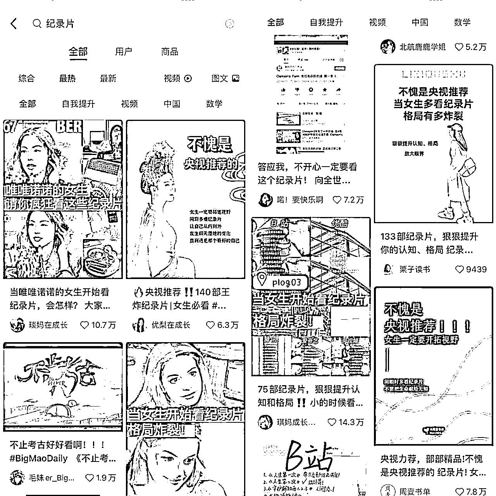
小建议：最热标题写到纸上 没事多看 提升网感（我写的字有点辣眼睛🤭）
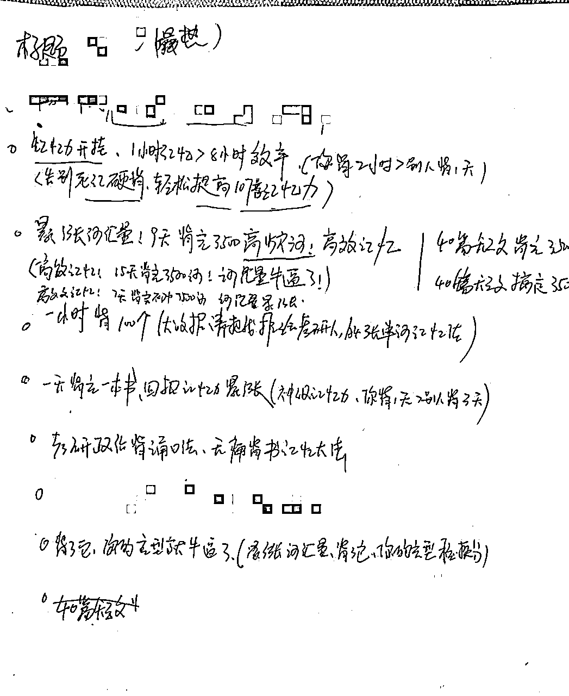
当然 用蝉妈妈等数据平台也可以收集最火标题，个人认为新人还是人肉比较好 能加深理解和记忆，后面再用工具提高效率
2种写标题方法结合使用 效果更佳哦！
使其既符合人性法则又自带爆款基因，标题这块就问题不大了，接下来解决内容生产
钩子是资料号的灵魂，做资料号首要考虑引流转化，而不是点赞收藏 这些都是虚荣指标
拥有好钩子的笔记在哪里呢，参考评论区
反面案例：图1
特点：点赞很多 但评论区几乎没人 或者像第三个案例评论区变成了聊天室也没实际意义
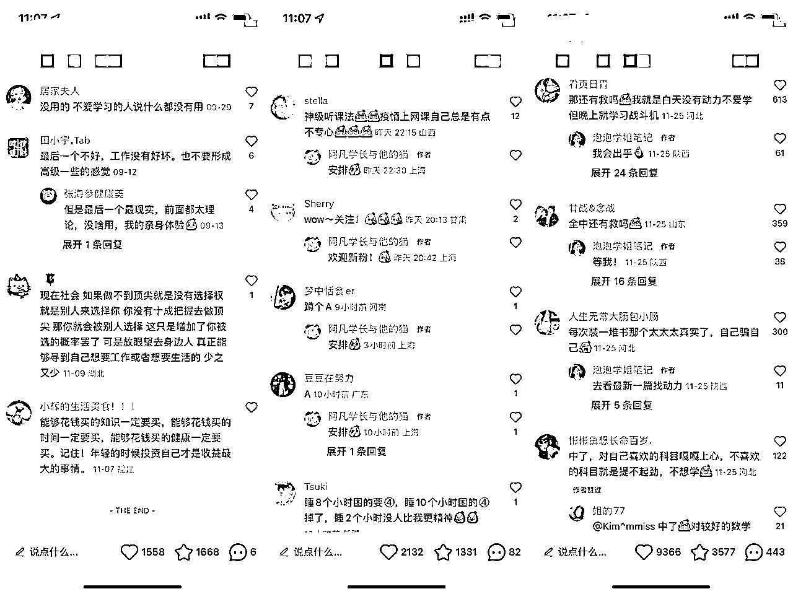
正面案例：下图
特点：评论区都在求分享，求链接
这种笔记才是赚钱笔记，资料号不靠带货，用户的点赞和收藏只能让自己感觉很好，而评论的用户才是我们真正的衣食父母！
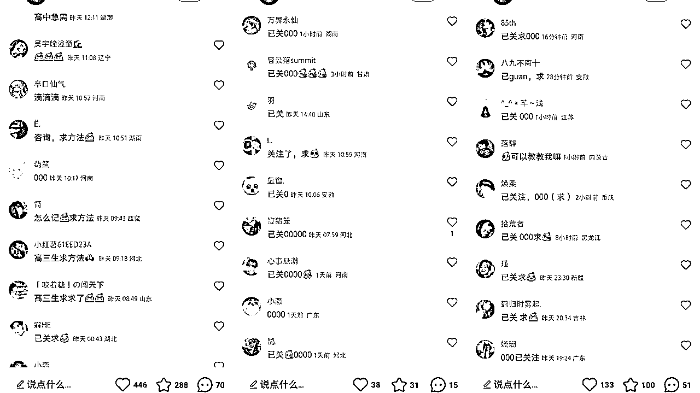
通过手动刷同行笔记+系统自动推荐，我们会源源不断的找到大量同行的赚钱笔记！接下来我们就让其为我所用。
我是这样做的
每天固定半小时刷同行，只要发现带有好钩子的笔记就收藏
如下图，弄个专辑分类收藏 然后小号私聊同行要资料，或者自己拼夕夕 淘宝买都可以
不要纠结我没有好钩子，牢记一句话：同行是最好的老师，万物不为我所有 却为我所用
一波操作下来：我们就会有自己的10个、20个甚至更多的 高需求的钩子，这个问题轻松拿捏
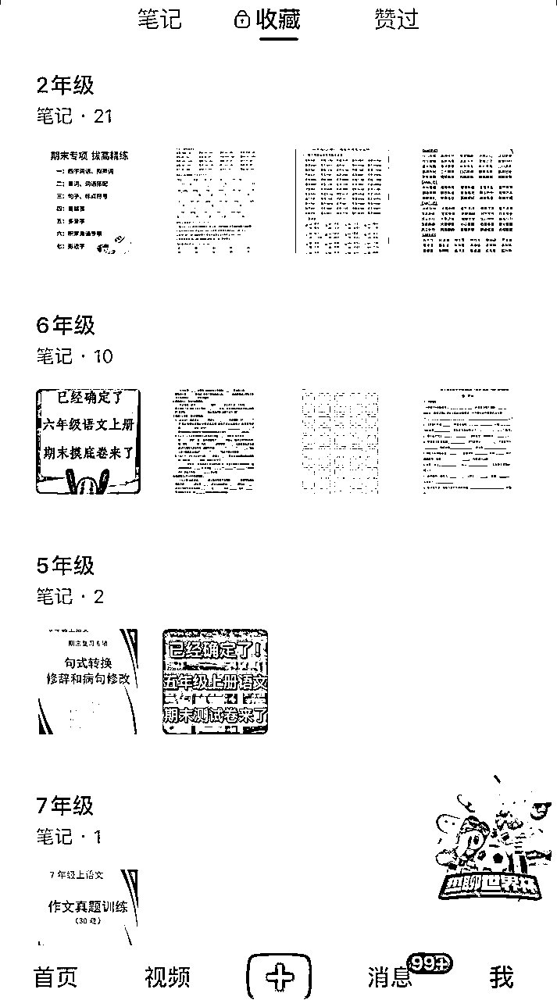
前期不太建议自创“自己感觉良好”的钩子（自嗨误区），除非有相关经验 了解市场 了解用户心理。
同行爆款笔记中的钩子是经过市场验证的 经过群众认可的 是用户觉得好的！
拿到同行钩子资料以后，我们修修改改以后就是自己的引流利器了（拿来把你😜）
没水印的截图直接使用（用美图秀秀加上不同相框和贴纸）
有水印的图片转文字重新排版再使用，我用的是这个软件 转换准确率不错。
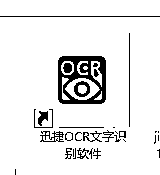
下图这是一个同行的笔记 内容是一样的
一个点赞近2000 评论才35，一个点赞500 评论230，转化率至少相差5倍以上，区别在哪里呢？
第一篇表达了我有100篇 只展示4篇，给用户看冰山一角后 告诉他快到碗里来 还有更多，
这个就是老大亦仁说的资料号钩子的核心原则：给他看一半 剩下一半用来诱惑他 很坏 但屡试不爽！
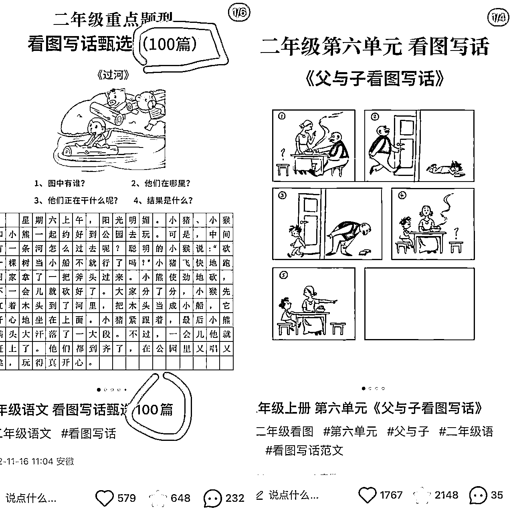
总结：
于资料号而言：做一篇赞100 评100的笔记 赚到的钱要远多于一篇点赞1w 评论20的笔记
我们不需要上热门 不需要爆款，只要做时不时的有几个笔记点赞50+ 评论50+ 那就很香了
放弃虚荣指标 做好钩子，平均1篇笔记可以引流到20～30人 日子就很滋润了
还是那句话 爆款都是重复的
方法：先复制别人的爆款 不断测试 直到跑出来自己的爆款 接下来要做的就是抄自己的爆款。
如下图：这个账号粉丝1500 做了不到一个月，其他笔记数据很差 直到出来一个数据好的
这位老哥就一直发，原理就是火过的内容大概率还会火，很多人在作出爆款以后就苦思冥想接下来做什么选题。我们不妨简单一点直接抄自己的爆款，你会发现：一直发 一直爽！！！
简单吧？，只要有数据不错的笔记我们就要一直怼 直到没流量，
这个期间呢 我们可以一天发2篇，一篇重复发爆款 一篇用于测试新模板，直到吃完这波红利，
下一个爆款也测出来了，岂不快哉！
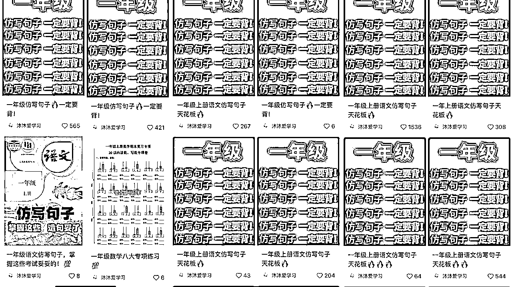
下面这个是我自己的账号：对号中的作品是一模一样的，标题 封面 内容都没动 刺激不？
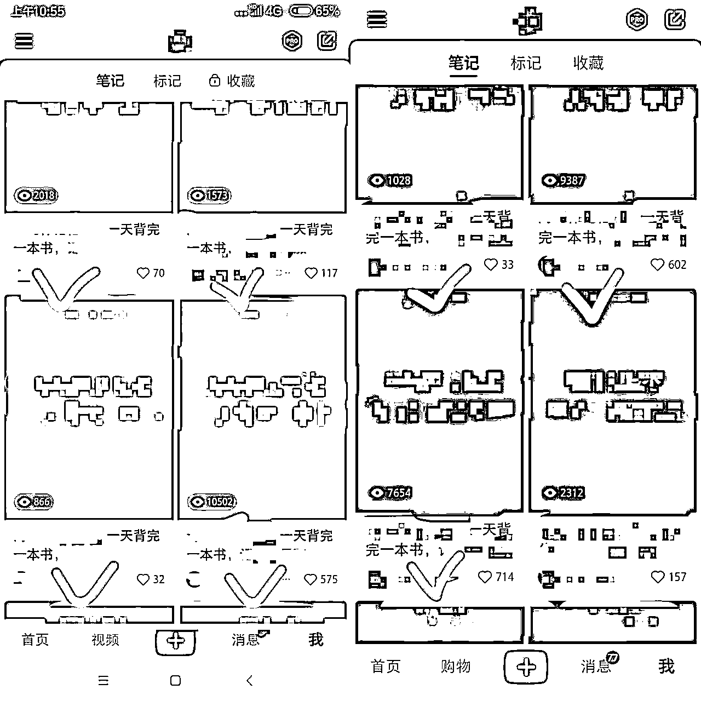
曾经有一份爆款摆在我面前，但我没有珍惜，等到失去了我才后悔莫及，尘世间最痛苦的事莫过于此。
如果上天可以给我再来一次的机会，我会对那个作品说三个字：“一直发！”如果非要加一个期限的话，我希望是一万年。
有了爆款，接下来我们就要引导用户在评论区 疯狂扣666了。
让用户多多评论最直接的好处是
那重点策略就要放在多多让用户评论和关注上
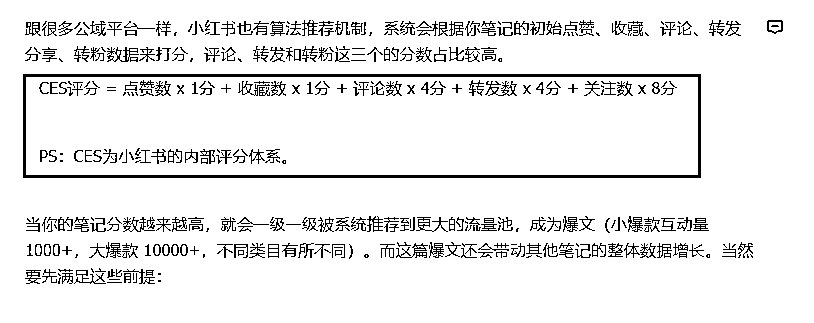
原理
具体怎么操作呢，也很简单 效果顶呱呱
1.引导关注+扣随机数字（给出简单指令，同时这个指令有利于我们做数据）
2.拿3个小号自己先评论（激发羊群效应，三人成虎 3个就够了）
没有小号的话加几个任务群互助群：小红书直接搜关键字 就会找到很多
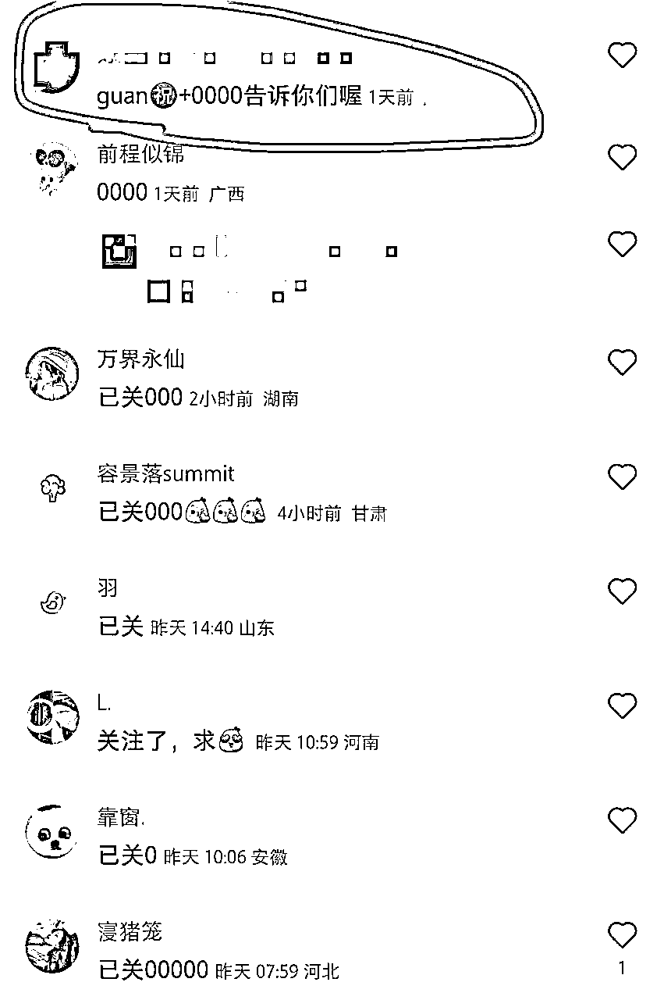
实操案例：
我有篇作品 晚上发布了不到半小时点赞50 但没有评论，我感觉有戏：
于是我用大号评论区引导后又用2个小号水了一波 睡前又收到3.4个用户的评论，我就安心的睡下了，第二天起来都是果然爆发了 都是99+（有时候真的就是只缺个领头的，一个简单的小动作既刺激了用户又提高了笔记分数）
到这里我们用了爆款选题 爆款封面 爆款标题 爆款钩子 +引导了评论区，出炉的作品自带爆款基因
接下来就要每天发作品 怼数量，剩下的交给天意，不出10天应该会有小爆款
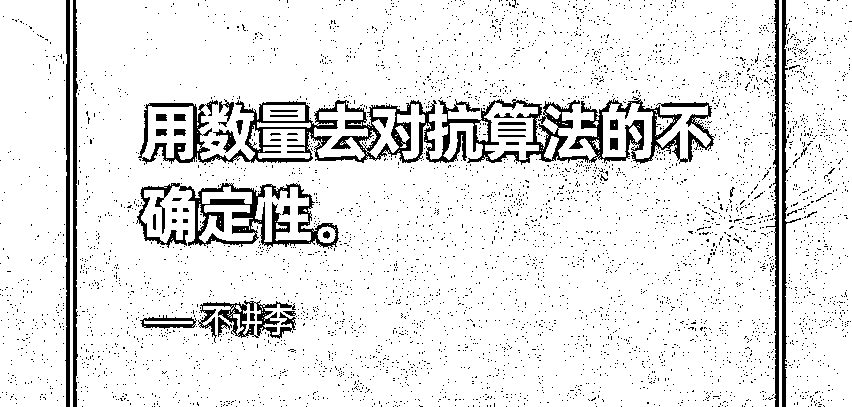
加微信，我用的方式也很简单
私信每一个关注的用户（由被动待客转为主动去撩用户）
形式：图片+文字（举例：同学你好 这里发不过去资料 +老师给你发哦）
注意的点：
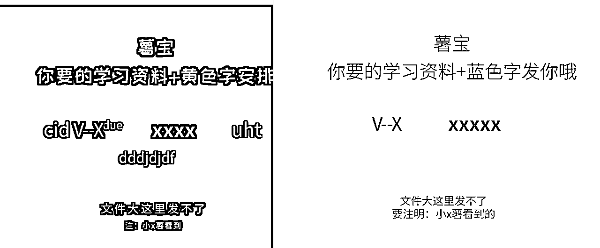
下一步准备结合建群引流 一起来
有的账号没有这个功能：直接小红书搜“帮建群” ，能找到很多，1块2块就能搞定
下面这个同行的话术不错 可以参考一下（制造紧迫感）
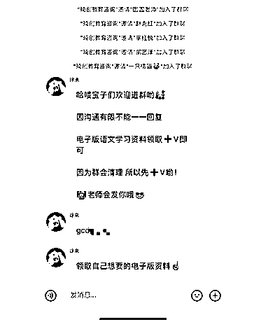
还有其他引流方式咱们的航海手册里面都有（下图）圈友们可以去多多学习
我感觉用好1.2种就可以了，少则得 多则惑。
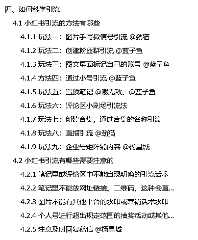
变现方面我目前是转化线上课程（这方面星城教练负责，没有实操 就不发言了）
以后希望链接到各科目的老师 进行多次转化。
好了 到这里就结束了
有疑问的伙伴可以评论区留言哦
补充：新启动的账号第一篇：有可能突破千赞 赞评接近1:1（内容还是之前的 爆款可复制！）
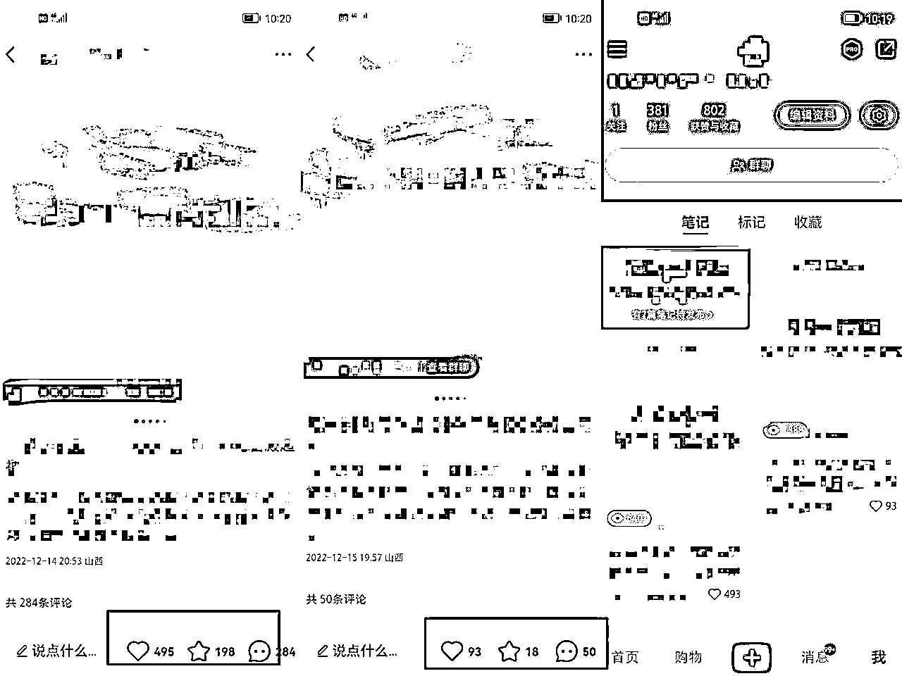
最后
感谢老大亦仁提供的生财大家庭，结束了我闭门造车的局面
感谢我的推荐人钱南 带我进生财有术 让我赚到了互联网第一块钱
感谢星城教练的指导 让我在互联网这个行业飘了2年的人终于“入了门”
感谢航海中遇到的每一位亲爱的船员和可爱的志愿者伙伴给我提供的帮助
一句话共勉：何以生财 唯有实战，伙伴们快快下场 把手弄脏！！！
.......补充..........
感谢圈友 国强，为这个帖子做的一个思维导图 感觉很棒 特意来补充一下，希望对大家有帮助。
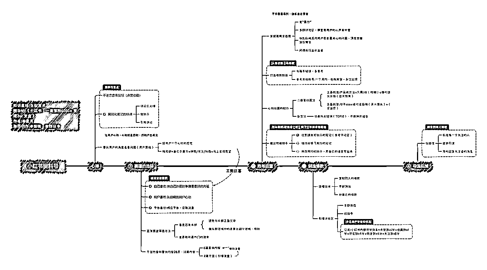
其他精华帖（迭代出来的新技术）
引流效果暴增10倍！ 历经3个月迭代出的小红书爆款笔记框架
https://wx.zsxq.com/dweb2/index/topic_detail/584115844185284